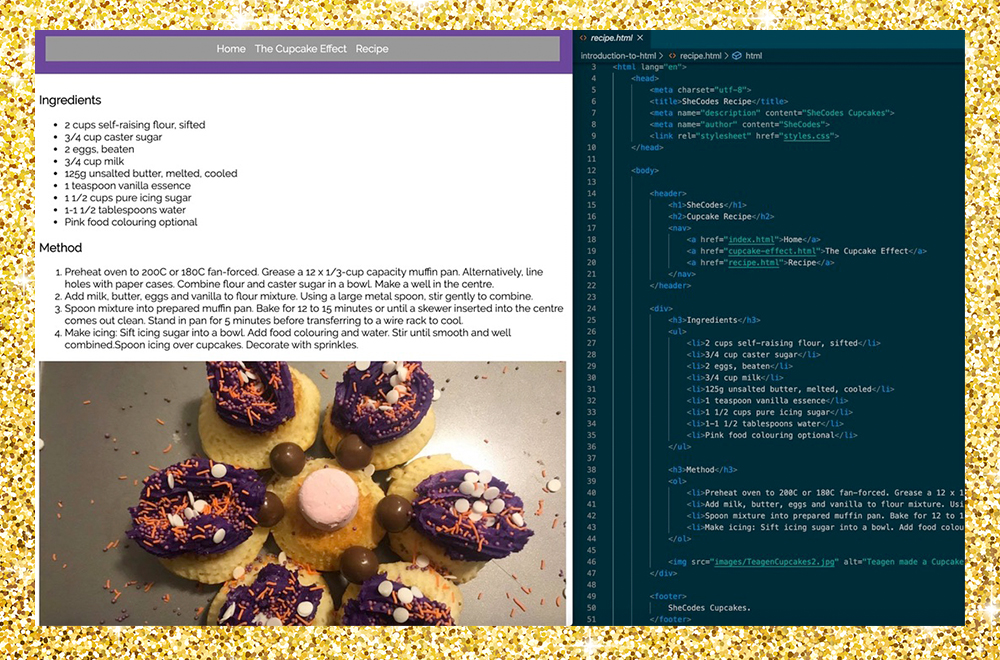
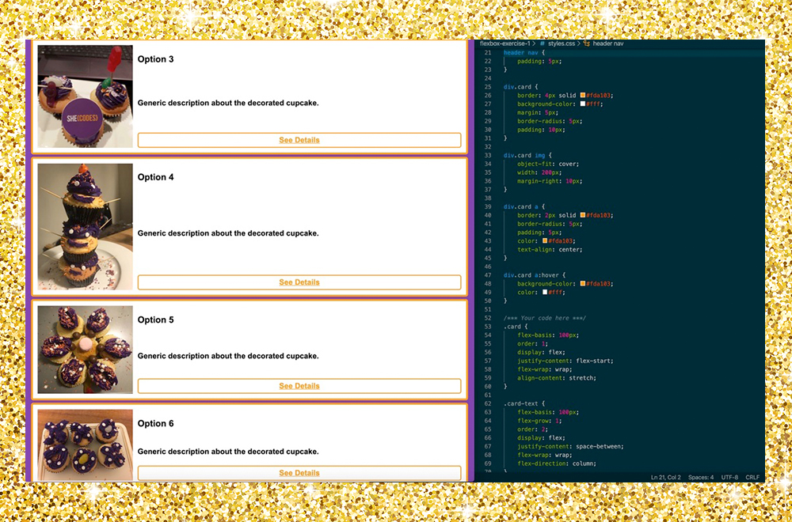
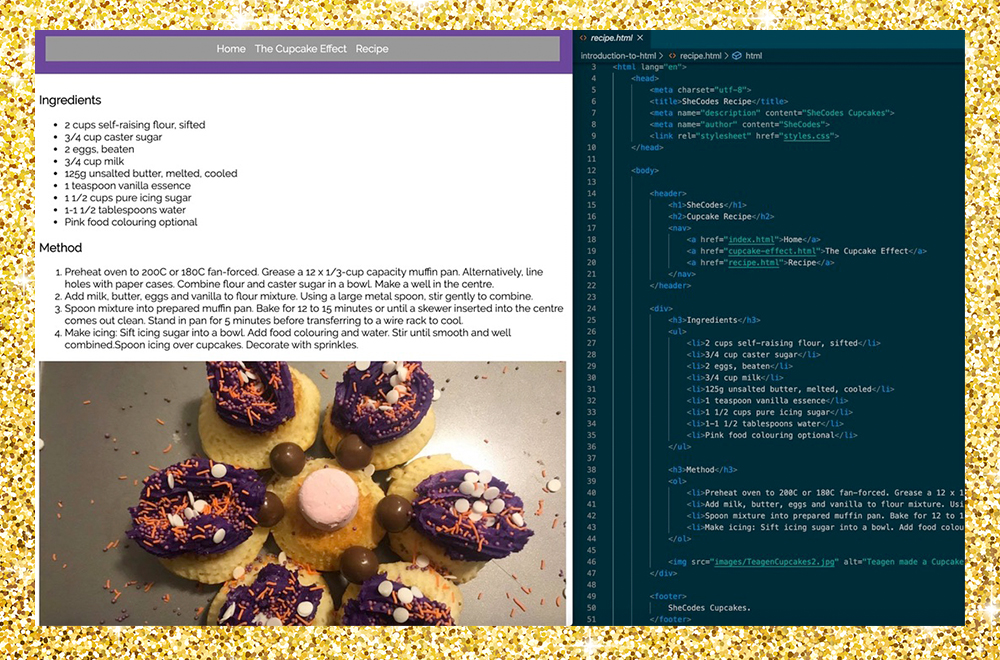
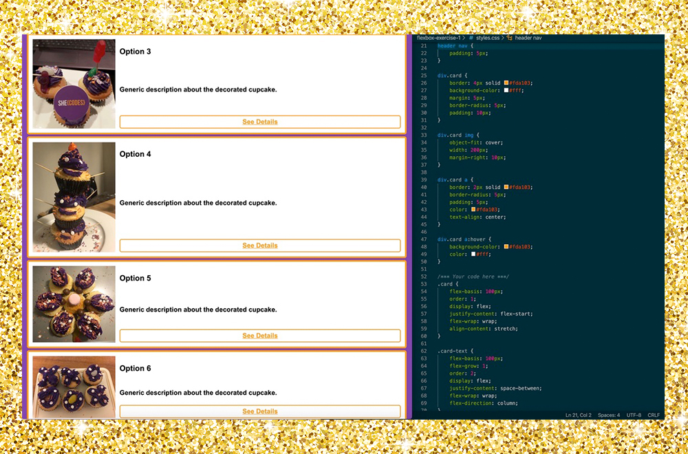

I am an events management queen and budding digital marketing professional, honing my skills in digital promotion for events including website development and design, apps and social media. I specialise in email marketing, conversion funnel analytics, website development, search engine optimisation and social media marketing using Facebook, LinkedIn and Instagram. My extensive experience in engagement at events has allowed me to build support for digital tactics, leading to increased event activation and improved ROI. I enjoy continuously innovating in the event space by using new technologies to build engagement with clients, and allowing traditional marketing tactics to support activation and increase lead captures. I use organic content and advertising to target audiences and event registrations, and raises event capacity and online conversations through showcased live streaming and video production. Last year, I received a scholarship as part of the She Codes Flash 2019 program, which was an intensive program learning web design with HTML/CSS, web development with Python and Flask, data processing and visualisation with Python, and hardware programming with MicroPython. I am currently building on my experience and I have received a scholarship as part of the She Codes Plus 2020 program.
 


